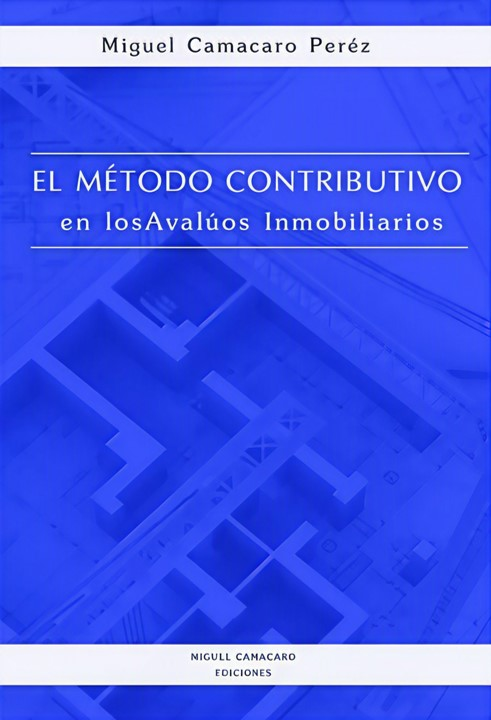

Modelo Mandelblatt-Camacaro/Simulador Monte Carlo
Enfoque probabilístico del Método Contributivo. Transforma el cálculo determinístico en una distribución de frecuencias, con intervalos de confianza y análisis de sensibilidad ceteris paribus.
☕ Aporte / Donación
CAP. 7 - SIMULACIÓN DE ESCENARIOS

PARÁMETROS DEL MODELO
RESULTADOS DE LA SIMULACIÓN
100.000 pruebas
Caso base (determinístico): Vi = 0 UM - Vut = 0 UM/m² — ambos valores deterministas quedan contenidos dentro de los intervalos probabilísticos generados por la simulación.
Valor del Inmueble (Vi)
MEDIA
0
MEDIANA
0
DESV. ESTÁNDAR
0
COEF. VARIACIÓN
0%
MÍNIMO
0
MÁXIMO
0
Intervalo de confianza al 80%
Rango de valores donde se espera, con el nivel de certeza elegido, que se ubique el valor del inmueble.
| Mínimo | Media | Máximo | C.V. |
|---|---|---|---|
| 0 | 0 | 0 | 0% |
Análisis de sensibilidad — Tornado
Contribución marginal de cada variable explicativa (Ceteris Paribus ±10%).
Estadísticas — valores de previsión
| Pruebas | 100.000 |
| Caso base | 0 |
| Media | 0 |
| Mediana | 0 |
| Desviación estándar | 0 |
| Varianza | 0 |
| Sesgo | 0 |
| Curtosis | 0 |
| Coeficiente de variación | 0% |
| Mínimo | 0 |
| Máximo | 0 |
| Ancho de rango | 0 |
Configure los parámetros a la izquierda y haga clic en "Ejecutar Simulación".